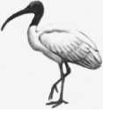
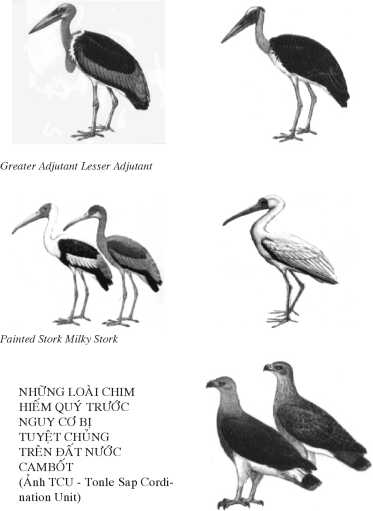
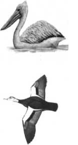

VỰC DẬY TỪ TRO THAN ĐI QUA NHỮNG CÁNH ĐỒNG CHẾT
Nỗi thống khổ của thần dân là nỗi đau của đấng quân vương.
Jayavarman VII
TRỞ LẠI THĂM XỨ CHÙA THÁP
Hơn 30 năm sau trở lại thăm đất nước Cam Bốt vẫn là một thứ kinh nghiệm “độc nhất vô nhị”. Năm 1970 là đi vào một đất nước Cam Bốt đang chìm đắm trong chiến tranh từ Việt Nam tràn sang. Thị trấn Krek không xa biên giới Việt Nam thường xuyên là mục tiêu của những trận mưa pháo và hỏa tiễn. Tiếp theo đó là những năm tháng kinh hoàng của chiến dịch “cáp duồn” người Việt dưới chính quyền Lon Nol, rồi là những năm “tẩy sạch chủng tộc” của Pol Pot.
Năm 2001 trở lại một đất nước đã trải qua những năm tháng ác mộng của mênh mông những Cánh Đồng Chết mà tưởng như mới hôm qua. Một đất nước với nền hòa bình còn non trẻ và mìn bẫy thì đầy rẫy sau những năm nội chiến đẫm máu. Nhưng Cam Bốt đang vực dậy từ tro than và hướng về tương lai.
Đối với du khách thì Cam Bốt nay thực sự trở lại với bản đồ Đông Nam Á do sự kỳ vĩ của các khu đền đài Angkor, một tụ điểm du lịch mà có lẽ không một nước Á Châu láng giềng nào có thể sánh bằng.
Lại thêm triển vọng từ 2002 mở ra một cuộc du lịch đầu tiên bằng thuyền hovercraft [ACV / Air Cushion Vehicle] 14 ngày khởi hành từ giang cảng Tư Mao/ Simao tỉnh Vân Nam xuống Cảnh Hồng qua khu Tam Giác Vàng [Miến Điện, Thái, Lào] xuống tới Luang Prabang - Vạn Tượng - Pakse vòng qua thác Khone xuống Cam Bốt - lên Biển Hồ tới Siem Reap - Angkor trở lại Nam Vang trước khi xuống ĐBSCL Việt Nam và bến đỗ sẽ là cảng Cần Thơ. Tuy chưa phải là cuộc hành trình suốt dọc con sông Mekong qua 7 quốc gia do có một khúc sông không lưu thông được qua các hẻm núi từ Tây Tạng xuống Vân Nam nhưng đây vẫn sẽ là một cuộc du lịch sinh thái / Ecotour 2,900 km đường sông qua 6 nước vô cùng hấp dẫn: du khách còn hy vọng được thấy những con cá Pla Beuk và Irrawady Dolphin cuối cùng còn sống sót trên sông Mekong trước khi trở thành những hình ảnh của quá khứ. Nhưng đó là chuyện của tương lai năm 2002.
Bây giờ là tháng 12 của năm đầu thế kỷ 21. Không với tính cách du lịch mà là một du khảo/ fieldtrip tới với một khúc đoạn khác của con sông Mekong, khúc sông đã từng loang máu và nổi trôi những chùm xác không đầu của người Việt. Cáp Duồn luôn luôn như một mối ám ảnh. Người Việt người Khmer nói chung vẫn có cách nhìn mang dấu ấn tiêu cực về nhau bắt nguồn từ mối thù hận lịch sử.
Cao Xuân Huy tác giả Tháng Ba Gẫy Súng nói với tôi: _ Anh không sợ bị Cáp Duồn à? Người Lào dầu sao cũng hiền lành hơn người Miên. Huy muốn so sánh chuyến đi Lào suông sẻ của tôi và chuyến đi Cam Bốt sắp tới. Hoàng Khởi Phong Người Trăm Năm Cũ cũng đưa ra một ý kiến không thuận lợi: _ Cuốn sách xong rồi anh còn đi Cam Bốt làm gì, anh vẫn còn thời gian để thay đổi ý kiến. Tuy không phải là một lời can ngăn nhưng chắc chắn đó không phải là một phát biểu đồng tình. Anh Đỗ Hải Minh / Dohamide người bạn Chăm lâu năm của báo Bách Khoa trước 1975 có lời khuyên tôi chưa nên đi ở một thời điểm quá gần biến cố 911 - nhất là khi tôi tỏ ý định đi thăm cộng đồng người Chăm Islam gần 500,000 người trong số 11 triệu dân Khmer theo Đạo Phật. Mấy người bạn Mỹ nơi bệnh viện tôi làm việc, có người gốc Green Beret từng qua Cam Bốt, cũng ngạc nhiên về “nơi đến nghỉ hè” của tôi. Thêm một thay đổi bất ngờ nữa là người bạn đồng hành Nguyễn Kỳ Hùng, vào giờ chót phải hủy bỏ chuyến đi theo dự kiến vì một dự án cuối năm của hãng Điện Toán Gateway mà anh là kỹ sư kế hoạch phải ở lại để hoàn tất. Anh là một phóng viên nhiếp ảnh trẻ tài hoa đã cùng đi với tôi trong chuyến về thăm ĐBSCL cách đây 2 năm.
Tôi hiểu rằng là một phóng viên, cho dù không ra chiến trường nhưng cũng có những mặt trận khác. Hiệp Hội Phóng Viên Không Biên Giới cho biết trong năm 2001 đã có 31 nhà báo thiệt mạng trong khi hành nghề, tương đương với con số của năm 2000, đó là chưa kể số ký giả bị cầm giữ. Ý thức những bất trắc chứ không phải chối bỏ nhưng nếu có gặp trắc trở thì cũng là chuyện đương nhiên của nghề nghiệp phải vượt qua và tận cùng xa hơn nữa, ở một thời điểm nào đó _ là cái chết, có ích hay không, vẫn là điều mà mỗi chúng ta phải đối diện hàng ngày, như điểm hẹn cuối cùng của mọi cuộc hành trình.
Đến với con sông Mekong với tôi đã như một tiếng gọi quyến rũ _ như một cuộc trở về, để tìm tới với Biển Hồ, con sông Tonlé Sap cùng với khúc đoạn khác của con sông Mekong. Điều mà thế hệ sắp tới có thể không còn cơ hội để thấy được sinh cảnh phong phú nhưng quá mong manh của một dòng sông sẽ trở thành “Con Sông của Quá Khứ”.
VÀI HÀNG TIN MỚI TRƯỚC CHUYẾN ĐI
_ Cam Bốt vừa được Tổng thống Bush loại ra khỏi danh sách những nước được coi là vận chuyển ma túy lớn nhất thế giới. Vẫn còn 23 nước có tên trong sổ đen của Cơ Quan Bài Trừ Ma Túy Mỹ / DEA trong đó có Trung Quốc, Miến Điện, Thái Lan, Lào và dĩ nhiên có cả Việt Nam.
_ Cam Bốt đang có kế hoạch cho giải ngũ khá tốn kém cho khoảng trên 30,000 quân nhân (bao gồm cả sĩ quan và hàng tướng lãnh) trước cuối năm 2002, trả họ về đời sống dân sự. Kế hoạch chủ yếu được tài trợ bởi Ngân Hàng Thế Giới, với hy vọng giảm thiểu số lượng súng đạn đang còn tràn ngập trên đất nước Cam Bốt tạo thuận cho hòa bình, “cải thiện nhân quyền” đồng thời tiết kiệm được 10 triệu đôla mỗi năm dùng cho các kế hoạch phát triển xã hội và kinh tế. Nhưng tham nhũng vẫn là trở ngại lớn nhất trong việc sử dụng số tiền 42 triệu tài trợ ấy.
_ Thủ tướng Hun Sen vừa ban hành sắc luật đóng cửa tất cả các phòng trà ca nhạc karaoke trên toàn quốc với lý do tệ nạn xã hội: tội ác bạo động, đĩ điếm lan tràn, dịch HIV phát triển ở các tỉnh miền quê do các cô gái karaoke trở về gieo rắc. Các tổ chức du lịch thì lại coi đây như “một đòn giáng khác” sau biến cố 911 vì số lượng du khách đã giảm tới 20% chủ yếu thành phần từ Âu Châu và Bắc Mỹ, chỉ còn trông vào khách Á Châu lại rất thích giải trí trong các hộp đêm.
_ Trùng hợp với chuyến viếng thăm của Chủ Tịch Nhà Nước Việt Nam Trần Đức Lương, đã xảy ra hai vụ cháy lớn tại các khu xóm nhà lá ở Nam Vang mà cư dân phần đông là người gốc Việt. Hai khu này vốn nằm trong kế hoạch giải tỏa của chính quyền Nam Vang. Trong khi mối bang giao giữa Việt Nam và Cam Bốt ngày một thêm căng thẳng vì tranh chấp biên giới như một vấn đề tồn tại lịch sử. Chính quyền và không ít người Cam Bốt vẫn coi ĐBSCL với hàng triệu người Việt gốc Khmer là thuộc Cam Bốt mà người Việt mới xâm chiếm bằng cuộc Nam Tiến từ mấy thế kỷ sau này.
ĐƯỜNG VÀO SIEM REAP
Trong cuộc chiến giữa Thái và Pháp (1941), Nhật đã ép Pháp phải cắt một phần đất của Cam Bốt nhượng cho Thái. Nhưng sau khi Nhật thất trận (1946), Thái phải trả lại đất. Có lẽ vì vậy mà có tên Siem Reap có nghĩa là “Xiêm bại trận”. Là một tỉnh nhỏ đồng quê nằm phía tây bắc Biển Hồ, cảnh trí xanh tươi với những bóng dừa, cây cau, cây me và đủ các loại cây trái nhiệt đới _ giống như ở ĐBSCL. Nguyên là vị trí trọng yếu với các ngọn đồi chiến lược, các vua Khmer đã dựng nên khu đền đài Angkor như kinh đô từ thế kỷ thứ 9 tới thế kỷ 13, nơi đây cũng từng là bãi chiến trường trong suốt những năm nội chiến của mấy thập niên qua.
Thời kỳ “sau Khmer Đỏ”, Siem Reap là một thị trấn đang thức dậy vì là điểm hẹn xuất phát cho những đoàn du khách tới thăm kỳ quan Angkor _ nhất là từ khi có đường bay trực tiếp đổ du khách ngoại quốc từ Bangkok vào Siem Reap mà không cần vòng qua ngả Nam Vang. Những chuyến bay tới Nam Vang thì càng ngày càng trống trải, du khách thì đổ dồn về Siem Reap, nhà khách phi trường quá tải và đang được các đội xây cất mở rộng.
Các khách sạn tiện nghi kể cả Sofitel 5 sao mau chóng mọc lên bao gồm cả sân golf, phải kể cả dự án đầy tham vọng của các doanh nhân Mã Lai lập các màn Shows “âm thanh và ánh sáng”
kỳ vĩ ngay trên khu đền đài Angkor Wat nhưng kế hoạch bị khựng lại do cuộc khủng hoảng kinh tế Á Châu vừa qua.
Dấu mốc 911 cũng thay đổi thành phần du khách: thưa thớt đến từ Bắc Mỹ và Âu Châu, đa số là du khách tới từ các nước Á Châu: Nhật bản, Đài Loan, Đại Hàn, Trung Quốc...
Chỉ cần giấy thông hành khi tới - Visas on arrival. Đội cảnh sát phi cảng Siem Reap có vẻ chuyên nghiệp làm việc lối dây chuyền: những người đàn ông Khmer vạm vỡ da sậm đen tóc quăn y phục thẳng nếp. Cho dù với thông hành Mỹ, tôi vẫn được giữ lại khá lâu với người đại úy trưởng toán với cặp mắt thật sáng nhưng lạnh. Khi trao lại sổ thông hành cho tôi, rất nhiều ngụ ý anh nói với tôi bằng tiếng Việt rất ngắn gọn hai tiếng Cám ơn. Và tôi hiểu rằng những ngày trên xứ Chùa Tháp với giấy tờ tùy thân gì đi nữa thì tôi vẫn thực sự mang căn cước một Người Việt. Tôi đang tìm tới với cộng đồng người Khmer, cộng đồng người Chăm mang theo cả gánh nặng quá khứ của gần ba thế kỷ. Liệu đến bao giờ thì mới rũ sạch được món nợ lịch sử này.
ĐẾN VỚI ĐẾ THIÊN ĐẾ THÍCH
Để thăm hết các khu đền đài phế tích Angkor trải rộng trên một chu vi trên 35 km, có lẽ du khách phải cần ít nhất từ 3 ngày tới một tuần lễ. Vì không phải là một cuộc du lịch tới Angkor, tôi chỉ có một ngày để đến thăm một nền văn minh rực rỡ nhưng đã suy tàn của con sông Mekong.
Năm 1943, chàng thanh niên 31 tuổi Nguyễn Hiến Lê trong dịp đi công tác cho Sở Công Chánh ở Siem Reap, đã có dịp đi thăm Đế Thiên Đế Thích và ông đã viết một du ký ngắn về chuyến đi này.

Sau Pol Pot, vũ khúc Khmer sống lại càng với đất nước Chừa Tháp đang hồi sinh

Bệnh viện Jayavarman VII Siem Reap-Angkor, mang tên vị vua triều đại Khmer- Angkor thế kỹ 12 rất thương dân được Hunsen khánh thành 1999, với bác sĩ Beat Richner cũng là nhạc sĩ cello chơi nhạc Bach
Les souffances des Peuples sont les souffance des Roi
Jayavarman VII

Câu trích dẫn với ẩn dụ đầy ý nghĩa “Nổi thống khổ của thần dân là nỗi đau của đấng quân vương ” _ Jayavarman VII
Hơn nửa thế kỷ sau ông, tôi đến với Angkor, đến với những khối đá khổng lồ và vô tri của Angkor nhưng được kết hợp thành một tổng thể kiến trúc hài hòa lại được tô điểm bởi vô số những tác phẩm điêu khắc hết sức tinh vi. Toàn cảnh thì đây là công trình vĩ đại của các kiến trúc sư bậc thầy, của một đội ngũ điêu khắc gia tài hoa và rất giỏi về cơ thể học. Bao nhiêu bút mực để vinh danh Michelangelo thời Phục Sinh của Phương Tây nhưng du khách đến với Đế Thiên Đế Thích chỉ biết âm thầm ngưỡng mộ những nghệ sĩ lớn khuyết danh và không thể không tự hỏi họ từ đâu tới và hồn họ ở đâu bây giờ. Tác phẩm của họ hoàn tất trước Michelangelo ít nhất là hàng 5 thế kỷ.
Bình minh trên Angkor Wat là một cảnh quan tuyệt đẹp, một khúc giao hưởng tĩnh lặng kết hợp giữa thiên nhiên và kỳ tích của con người. Năm ngọn tháp vươn lên trên một nền trời từ màu xám đang dần ửng đỏ. Mặt trời lên, hàng cây thốt nốt cao đứng soi bóng như nhân chứng của ngàn năm (cây thốt nốt vẫn được coi là biểu tượng của đất nước Cam Bốt). Sương đêm còn đọng long lanh trên những tàu lá súng bông súng trên mặt hồ. Bước lên những bực thang, đi vào khu đền đài với hàng ngàn thước đá chạm trổ như một pho sử đá cảnh trần gian, vươn lên là các tượng đá hùng vĩ uy nghi gây cảm giác choáng ngợp, để tưởng như thời gian ngưng lại cho phút trầm tư về nỗi phù du của các triều đại và kiếp người. Hướng lên những tượng Phật ánh mắt từ bi và nụ cười bí ẩn mà thanh thoát _ với nụ cười La Joconde, cô chỉ là một phó bản mờ nhạt không sao sánh được.
Bây giờ là bình minh của trời đất nhưng lại là hoàng hôn của một nền văn minh. Không, hoàng hôn của hai nền văn minh: Angkor-Khmer và Champa. Gặp gỡ những người Khmer bây giờ, người ta cũng không tránh được cảm nghĩ của Henri Mouhot _ người tái phát hiện đền đài Angkor cách đây hơn một thế kỷ, và cách đây một năm (2000) tôi đã ngồi bên ngôi mộ ông bên bờ hoang vắng của con sông Nam Khan một phụ lưu của con sông Mekong trên Thượng Lào, rằng khó mà tin họ có cùng dòng dõi và có liên hệ gì tới thế hệ đã qua xây dựng nên kỳ quan Angkor.
Cảm giác thật kỳ lạ vương vất khó tả khi chứng kiến đám bà sơ ngồi trên bệ đá cao của một khu thư viện hoang phế, hướng về phía mặt trời mọc cùng hát bản thánh ca hồn nhiên vô tư với thanh âm thoảng xa trong gió và trong nắng mai.
TỪ LÀNG NỔI VIỆT NAM
Từ Siem Reap bằng thuyền máy về hướng nam ra tới khu Chong Khneas hay còn được gọi là Khu Làng Nổi Người Việt phía tây bắc Biển Hồ, với sinh cảnh phong phú của đám cư dân sống trên sông nước.
Nguồn tài nguyên phong phú của Biển Hồ đã thu hút đủ sắc dân từ các nơi đổ tới và hình thành những khu làng nổi trong vùng đồng lũ và trên Biển Hồ. Nếp sống ấy hầu như ít thay đổi từ hàng trăm năm nay. Họ chủ ý sống bằng nghề chài lưới và cá vẫn là nguồn lợi tức chính _ ngoài cá lưới được từ Biển Hồ còn phải kể tới nghề nuôi cá lồng, trại nuôi cá sấu, nuôi rắn, nuôi vịt, đốn củi, săn chim thú và cả vớt các loài rong tảo.
Tới với khu làng nổi là tới với vẻ đẹp của một sinh cảnh thiên nhiên đồng lầy còn hoang dã. Những khu làng nổi này cũng di chuyển theo mùa, theo mực nước lên xuống. Bình minh hay hoàng hôn trên khu làng nổi là một trong những cảnh quan tuyệt đẹp của Biển Hồ.
TỚI TRÀM CHIM VÙNG SINH THÁI PREK TOAL
Từ Chong Khneas, khoảng hai tiếng đồng hồ bằng thuyền máy chạy băng băng trên mặt Biển Hồ gió mạnh sóng khá lớn trên trời mây vần vũ có cảm tưởng như đang trên mặt biển. Từng đợt nước hắt vào trong ghe, người ướt thì không kể gì nhưng phải bảo vệ chiếc máy chụp hình Canon _ không waterproof đã một lần bị ướt ống kính khi tôi đang nhắm chụp hình một chú chim lạ chắc là mỏi cánh tạm ghé đỗ trên một cụm lục bình trổ bông tím đang nổi trôi giữa biển nước chẳng thấy đâu là bờ.
Băng qua Biển Hồ đi về hướng nam để tới được Prek Toal thuộc tỉnh Battambang, là khu làng nổi khác của người Khmer, nơi đây có đặt văn phòng Sở Bảo Tồn Biển Hồ (Environmental Research Station for Tonle Sap Biosphere Reserve).
Vùng Sinh Thái Prek Toal với Tràm Chim là một trong ba khu sinh thái của Biển Hồ. Đây là nơi tụ hội đông đảo của một số loài chim hiếm quý. Từ xa trên Biển Hồ, đã thấy bay lượn những đàn chim nước lớn nhỏ đủ loại.
Như một hiện tượng thiên nhiên kỳ diệu, diện tích Biển Hồ co giãn theo mùa. Là hồ cạn với 2,500 km2 mùa khô, tới mùa mưa bắt đầu từ tháng 6 tháng 7, do nước con sông Mekong dâng cao tạo sức ép khiến con sông Tonle Sap phải đổi chiều, chảy ngược vào Biển Hồ, khiến nước hồ dâng cao từ 8 tới 10 mét và tràn bờ làm tăng diện tích Biển Hồ lớn gấp 5 lần khoảng hơn 12,000 km2. Chính con sông Mekong và Biển Hồ đã từng là cái nôi của nền văn minh Angkor.
Do một sắc lệnh của Hoàng gia Cam Bốt từ tháng 11/ 1993 quy định Biển Hồ Tonlé Sap là Khu Đa Dụng Bảo Tồn (Multiple Use Protected Areas). Tiếp sau đó qua bao vận động của Sihanouk, mãi tới tháng 10 năm 1997 Biển Hồ mới được UNESCO công nhận là Khu Bảo Tồn Sinh Thái (Biosphere Reserve).
Để quản lý Khu Bảo Tồn Sinh Thái, Biển Hồ được chia làm 3 khu: khu trung tâm (core), khu đệm (buffer zones), và khu chuyển tiếp (transition zones). Mục đích lâu dài là bảo vệ các khu trung tâm để tương lai sẽ trở thành công viên quốc gia.
Ba khu trung tâm có giá trị bảo tồn cao là:
_ Prek Toal rộng 31,282 ha
_ Boeng Tole Chhmar hay Moat Kla rộng 32,969 ha
_ Stung Sen 6,586 ha
Với hệ sinh thái hết sức đa dạng bao gồm những con suối, những hồ, các cánh đồng lũ, các loại thảo mộc đất sũng. Tất cả kết hợp tạo thành một hệ thủy học duy nhất của Biển Hồ, nuôi dưỡng một quần thể sinh học phong phú bao gồm vô số loại cá, các loại chim nước, các loài bò sát, loài lưỡng cư (amphibians), các động vật có vú, các rong tảo và vi sinh vật.

Lưới cá trên rừng lũ / flooded forest trong Biển Hồ

Tấp nập bến cá buổi mai đến từ Biển Hồ phía Siem Reap

Chuyến tàu cao tốc động nghẹt khách từ Siem Reap đi Nam Vang đang băng qua Biển HỒ

Từ Chong Kneas tỉnh Siem Reap, băng qua Biển Hồ đi về hướng tây nam, hướng tỉnh Battambang

Ba khu Bảo Tồn Sinh Thái trên Biển Hồ (1) Prek Toal, (2) Boeng Tonỉe Chhmar, (3) Stung Sen_ UNESCO 10-1997

Thất lạc giữa cánh đồng lữ (floodplain) trong khu Bảo Tồn Sinh Thái Prek Toal
Trong những tháng lũ, gần 2/3 diện tích những cánh đồng lũ của Biển Hồ bao phủ bởi quần thể các loại cây sống dưới nước gồm hơn 190 chủng loại.
Rừng lũ đóng một vai trò sinh tử để nuôi dưỡng và tái sinh các nguồn sinh vật, có tác dụng cộng sinh (symbiosis) hỗ tương như một chuỗi thực phẩm khổng lồ.
Riêng về cá, có tới hơn 200 loại cá trong Biển Hồ trong đó bao gồm hơn 70 loại cá có giá trị dinh dưỡng và thương mại lớn. Cá đánh được chỉ riêng ở Biển Hồ đã chiếm hơn 60% tổng số cá nước ngọt của Cam Bốt.
Mối e ngại hiện nay là số lượng cá ngày một sút giảm, số cá lớn cũng ngày một ít đi. Riêng về các loài chim, do nguồn thức ăn vô cùng phong phú, cộng thêm với sinh cảnh đồng lầy và rừng lũ rất biến thiên, tạo nên vùng cư trú lý tưởng cho vô số loài chim nước. Khảo sát sơ khởi cho thấy có hàng trăm loại chim trong số đó có 12 loại được coi là hiếm quý đối với thế giới.
Rừng lũ Biển Hồ còn là sinh cảnh cho các loài bò sát, loài có vú: 23 loại rắn, 13 loại rùa, 1 loại cá sấu, vượn khỉ, mèo báo, rái cá...
Tính đa dạng và biến thiên trong Biển Hồ cho tới nay chưa hoàn toàn được biết rõ nếu không muốn nói là thiếu sót. Cần có ngay một kế hoạch quy mô nghiên cứu, ghi nhận và theo dõi các loài cá chim, cây cỏ và rong tảo, phẩm chất biến thiên của nước và toàn cảnh hệ sinh thái nói chung. Bởi vì với tốc độ khai thác quá mức như hiện nay, một số chủng loại hiếm quý có khi đã bị tiêu diệt trước khi được biết tới, giống như tình trạng ở thác Khone Nam Lào.
Bây giờ là giữa tháng 12, mực nước xuống thấp tới 1/3 thân cây mộc. Những búi rác khô vướng trên cành cao cho thấy mực nước đỉnh lũ cách đây 3 tháng phải cao hơn tới 3 mét. Giữa các chòm cây, không có lấy một đường nước quang đãng phía trước. Chỉ thấy nhấp nhô trên mặt nước là các bụi cây thấp. Có lẽ với một chiếc ghe tam bản nhỏ là thích hợp để di chuyển trong rừng lũ. Chiếc ghe thuê hiện giờ là một thuyền máy khá lớn để đi trên Biển Hồ. Chỉ có tôi là Việt Nam, với ba người Khmer trên một chiếc ghe giữa mênh mông khu rừng lũ. Cứ chạy được một đoạn chiếc ghe khựng lại do cánh quạt bị quấn đầy những dây nhợ và các bụi cây nhỏ. Mỗi lần như vậy thì tài công và người phụ máy lại phải nhảy xuống nước bì bõm loay hoay tháo gỡ. Họ có vẻ bực bội lớn tiếng như gây gổ nhau và nét mặt hiện vẻ hung dữ. Trong khi người hướng dẫn mới lên ghe từ Trạm Bảo Tồn thì vẫn cứ ngồi yên nơi mũi ghe, vẻ mặt khắc khổ đen sạm lắc đầu tỏ vẻ mất kiên nhẫn. Giữa rừng lũ không phương hướng, dưới bầu trời nắng gắt là những cánh chim bay lượn. Tiếp tục đi tới hay quay trở về, không biết quyết định nào là đúng và tôi cũng không thiếu tưởng tượng để một thoáng nghĩ rằng nếu có chuyện gì xảy ra ở một nơi xa xôi hẻo lánh _ một thứ no man’s land như nơi đâythì tôi cũng ở một thế rất bị động. Tôi cũng hiểu rằng bản năng con người thì bao giờ cũng như một con thú đang im ngủ, mọi tỏ lộ nét sợ hãi chỉ có tác dụng đánh thức thú tính và tôi đã chọn thái độ thản nhiên gần như phó mặc. Nhưng rồi cuối cùng thì chiếc ghe máy cũng tới được trung tâm Tràm Chim.

Đàn chim nước trong Tràm Chim Prek Toal trên Biển Hồ
Do có điện đàm trước từ văn phòng Khu Bảo Tồn, Meas Rithy một thanh niên còn rất trẻ có ý chờ đó tôi từ khi nãy. Anh không nghĩ là với thuyền máy lại có thể đi chậm đến như vậy. Meas tốt nghiệp BS về Lâm Nghiệp (Forestry) Đại học Hoàng gia Phnom Penh, từ ngày ra trường được bổ nhiệm làm trưởng trạm Prek Toal _ Tonle Sap Biosphere Reserve. Vì thường xuyên tiếp xúc làm việc với các viên chức UNESCO,
NHỮNG LOÀI CHIM HIẾM QUÝ TRƯỚC NGUY CƠ...


Oriental Darter Spot-billed Pelican


Meas nói tiếng Anh lưu loát. Cũng do quen tiếp đón các đoàn khách, kể cả khách du lịch, Meas cũng dành cho tôi một briefing vừa đủ và ngắn gọn để hiểu hơn về Tràm Chim và Khu Bảo Tồn. Do tôi cũng có làm Home work trước chuyến đi nên những điều anh nói ra chỉ giúp hệ thống hóa những thông tin mà tôi có được và quan trọng hơn là sau đó Meas giúp tôi một chuyến quan sát thực địa có hướng dẫn.
Bước đầu như một thách đố, Meas chỉ cho tôi một cái chòi buộc cheo leo trên ngọn cây cao như trạm quan sát. Phải leo lên bằng nhiều bực thang dây đu đưa. Với những năm lính tráng và cả ba năm tù đầy, thì đây chẳng phải là một thử thách. Tôi thoăn thoắt leo lên trước. Chòi nhỏ chỉ đủ treo một chiếc võng và sàn đứng là những thân cây xếp ngang buộc bằng dây trạo. Có lẽ đây là điểm cao nhất để có một cái nhìn toàn cảnh tràm chim. Từ đây bằng ống nhòm có thể nhìn ra từng lùm cây xa, với vô số chim lớn nhỏ đậu từng chùm trên đó. Meas giảng cho tôi đặc tính của một số loài chim. Meas nói thêm thời gian lý tưởng để thăm Tràm Chim là từ tháng Giêng tới tháng Ba cũng là mùa nước cạn [cùng thời gian với Tràm Chim Tam Nông Đồng Tháp Mười] rừng lũ trở thành vùng đất bùn với rất nhiều vũng và các hồ cạn với ê hề tôm cá, cũng là thời gian để các loài chim muông tụ về đây nhiều vô kể _ sinh cảnh ấy chắc phải vượt xa cuốn phim kinh dị về chim của Hitchcock. Như một kỳ quan môi sinh _ ecological wonder.
Không ăn sáng mà cũng chưa có ăn trưa. Tôi được anh tài công chia cho nửa hộp cơm trắng với một khúc lạp xưởng rất nhiều mỡ. Bụng đói nên ngon miệng với từng miếng cơm thật ngọt.
Sau đó tôi và Meas bước xuống chiếc xuồng tam bản nhỏ với một người chèo để tới gần hơn với từng vòm cây và đám chim muông. Con thuyền nhỏ lướt nhẹ trên mặt nước giữa vẻ đẹp hoang sơ và trinh nguyên của khu rừng lũ. Ghe dừng lại từng chặng để tôi có thể quan sát từng loại chim khác nhau trong số đó có chủng loại được coi là hiếm quý cần được bảo vệ như: Spot-billed Pelican / chim bồ nông mỏ đốm, Oriental Darter / bồ nông cổ rằn Đông phương, Lesser Adjutant, Greater Adjutant, Black Necked Stork / sếu cổ đen, Painted Stork / sếu vằn, Milky Stork / sếu sữa, Glossy Ibis / cò quăm, Grey-headed Fish Eagle / chim ưng đầu xám...
Tôi cũng được biết từ buổi sáng sớm cùng ngày đã có mấy nhà điểu học người Pháp đi bằng thuyền nhỏ ra các vòng xa hơn để chụp hình và quay phim một loài vịt trời cánh trắng / White-winged Duck được coi như rất quý hiếm.
Trên vòng về, tôi được biết thêm về cuộc sống Meas. Lương 15 đôla một tháng không đủ sống vẫn còn phụ thuộc bố mẹ nhưng anh vẫn say mê công việc đang làm là bảo vệ rừng lũ và đám chim muông. Anh không hay biết gì về chuỗi những con đập bậc thềm khổng lồ Vân Nam và cả tình huống nếu Biển Hồ xuống thấp 1 mét thì hậu quả tức thời là sẽ mất đi 2,000 km2 diện tích rừng lũ _ dĩ nhiên có khu bảo tồn Prek Toal.
Meas không có được tầm nhìn xahơn Tràm Chim của anh và chỉ ôm ấp một giấc mộng con, mong ước sao có được mối quen biết _ mà anh gọi là connections, để có cơ hội đi học thêm nhất là ở Mỹ. Trước khi rời Prek Toal trở về Siem Reap, chia tay anh, tôi không quên phần đóng góp tượng trưng 20 đôla như một hỗ trợ duy trì sinh hoạt Khu Bảo Tồn.
JAYAVARMAN VII SIEM REAP
Thời gian còn lại ở Siem Reap, tôi tới thăm bệnh viện Nhi đồng Jayavarman VII được Sihanouk và Hun Sen cùng cắt băng khánh thành năm 1999. Đây là bệnh viện thứ ba, hai bệnh viện kia là Kantha Bopha I và II ở Nam Vang. Beat Richner là một khuôn mặt huyền thoại _ giám đốc cả ba bệnh viện không chỉ là một bác sĩ Nhi khoa, ông còn là nhạc sĩ cello chơi nhạc Bach có hạng. Gốc Thụy Sĩ, từng là bác sĩ điều trị trong trong một bệnh viện nhi đồng ở Nam Vang từ 1974 - 1975 cho tới khi Khmer Đỏ tiến chiếm thủ đô. Năm 1991, Richner được Sihanouk yêu cầu giúp phục hồi bệnh viện nhi đồng này. Năm 1992, bệnh viện Kantha Bopha bắt đầu hoạt động. Năm 1996, thêm một bệnh viện kantha Bopha II được khánh thành cũng ở Nam Vang. Ba năm sau khánh thành thêm một bệnh viện ở Siem Reap-Angkor: bệnh viện Jayavarman VII, với cái tên chọn đặt bao hàm một nội dung lịch sử.
Jayavarman là tên vị vua anh hùng cuối cùng của triều đại Khmer-Angkor thế kỷ 12, có công mở mang bờ cõi vương quốc rộng lớn nhất, không chỉ xây dựng các khu đền đài kỳ vĩ nổi tiếng như Bayon, ông còn quan tâm tới các công trình công ích như mở mang đường xá, xây cất nhiều dưỡng đường và các bệnh viện.
Mọi điều trị trong bệnh viện Jayavarman VII rất tiêu chuẩn, tất cả đều miễn phí cho mọi trẻ em nghèo Cam Bốt. Bệnh viện còn là nơi giảng dạy thực tập cho sinh viên y khoa và các nội trú. Để điều hành cả ba bệnh viện, mỗi năm cần tới 9 triệu đôla do tặng dữ của tư nhân chủ yếu từ dân chúng Thụy Sĩ. Bác sĩ Richner cứ 3 ngày ở Nam Vang, 3 ngày cuối tuần ở Siem Reap. Cho dù vô cùng bận rộn nhưng mỗi tối ngày thứ bảy bao giờ cũng có một buổi hòa nhạc Bach ở bệnh viện. Beatocello in Concert do chính Richner trình diễn để gây quỹ nhưng vào cửa thì tự do. Tới tham dự phần đông là du khách ngoại quốc đang tới viếng thăm khu đền đài Angkor.
Giữa một thị trấn nhỏ, không xa Đế Thiên Đế Thích, trong khí hậu của lục địa Á Châu Gió Mùa, cảm giác thật kỳ lạ khi thả mình trong dòng nhạc J.S.Bach qua tiếng đàn cello của người bác sĩ nhi khoa tên Richner để thấy rằng không còn giới hạn Đông và Tây như Kipling thường nói, bây giờ thì con sông Mekong như đã hòa lẫn vào con sông Danube. Người thầy thuốc nghệ sĩ ấy đã đưa nhạc Bach đầy tiết tấu và trí tuệ vào các khu đền đài của Châu Á. Bach At The Pagoda với những nốt nhạc còn vang xa, vươn xa tới cả Những Cánh Đồng Chết để xoa dịu vỗ về và là nguồn an ủi.
Rời bệnh viện Siem Reap sạch sẽ khang trang với hình ảnh những bà mẹ Khmer tin tưởng ôm con từ ngoài cửa đi vào, cùng một lúc hừng lên trong nắng mai trên cao nơi mái ngói đỏ là tượng Jayavarman VII hao giống đầu tượng Phật với cạnh đó là một câu trích dẫn có lẽ do chính Richner chọn, với ẩn dụ đầy ý nghĩa: Les souffrances des peuples sont les souffrances des rois / Nỗi thống khổ của thần dân cũng chính là nỗi đau của đấng quân vương _ Jayavarman VII. Vua Sihanouk của một thời sắp qua, Vua Hun Sen của thời đại mới có cảm nhận được niềm đau nào không của những người Khmer sống sót đi ra từ Những Cánh Đồng Chết.
Richner gợi nhớ hình ảnh một Schweitzer chăm sóc những người bệnh Hansen / phong cùi ở Lambaréné Phi Châu, cũng là một nhạc sĩ nhưng trước Richner hơn nửa thế kỷ.
Phần ngày còn lại, tôi cũng tới thăm trại nuôi cá sấu cách trung tâm thị trấn 2 km. Trại nuôi cá sấu thì đâu có gì lạ nhưng do chuyện kể kinh hoàng không thể tin là có thật, thời Pol Pot lính Khmer Đỏ đã ném các nạn nhân còn sống xuống hồ cho đàn cá sấu xúm vào ăn thịt. Bây giờ trại chủ yếu nuôi sấu bán sang Thái Lan với giá 2,000 đôla/ con để lấy da. Cảnh cá sấu ăn thịt người thì không thấy nhưng chỉ riêng cảnh cho cá sấu ăn bình thường hàng tuần mỗi thứ sáu cũng đã khiến cho người xem phải lên ruột.